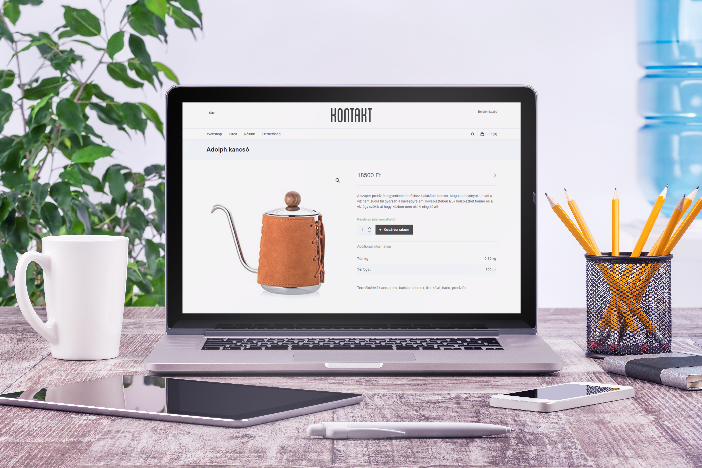

Kontakt webshop

Building a webshop
I was responsible for creating a webshop from the scratch for a coffee shop located in Budapest, called Kontakt.
The webshop has been shut down in June, 2017.
Site structure
The main frame of the webshop is WooCommerce running on Wordpress. A webshop theme has also been customized to achieve an aesthetic and consistent look.
Payment and shipping
Online payment with credit and debit card is possible through a secure payment gateway. The customer is also able to choose from different shipping options.